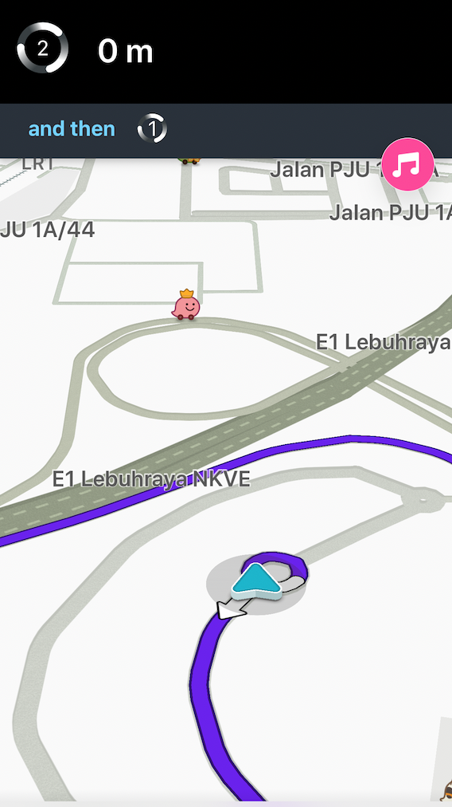
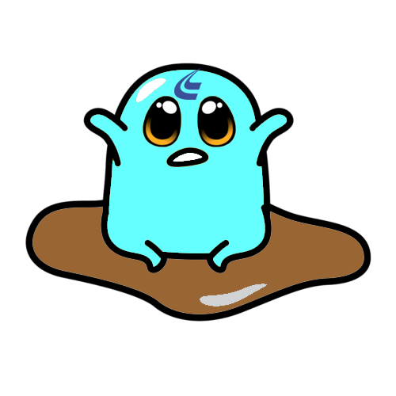

<ion-header>

</ion-header>

<ion-content padding>
  
  <ion-card class="bottom-card">
    <!-- <ion-card-header style="padding-bottom:0cm;padding-top:10px">
      <ion-card-title style="font-size:18px">Predicted Traffic Conditions</ion-card-title>
    </ion-card-header> -->
    <ion-content>
      <div id="imgwrap" (click)="toastTakeABreak()">
        
      </div>
      <!-- <ion-avatar >
        
      </ion-avatar> -->
    </ion-content>
  </ion-card>
  <!-- <ion-fab  vertical="bottom" horizontal="end">
      <ion-fab-button style="background:transparent;box-shadow:none">
      </ion-fab-button>
    </ion-fab> -->
  
</ion-content>
